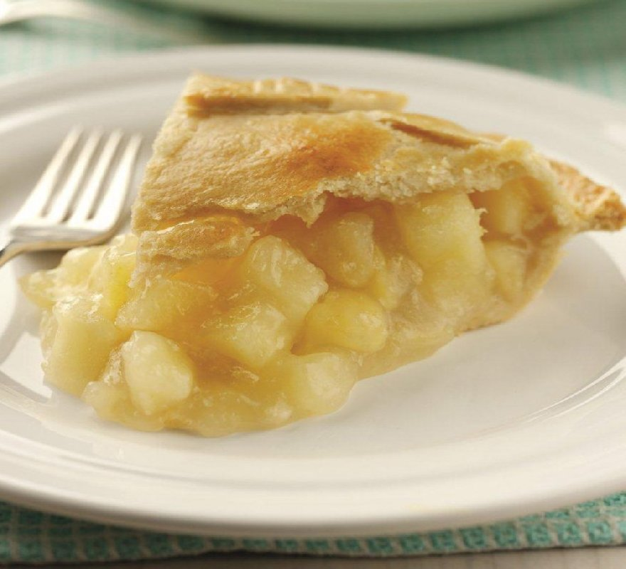

Apple pie

Sweet, warming and tasty. An apple pie that you'll love
Ingredients
- All Butter Shortcrust Pastry Block
- 1 kg Cooking apples, peeled, cored and thickly sliced
- 1 Lemon, juice and rind
- 1 tbsp Flour
- 100g Caster sugar, plus a little extra sugar for dredging
- 2 tsp Ground cinnamon
- 10ml water for brushing
Steps
- Preheat oven to 200ºC (180ºC fan assisted)/400ºF/Gas 6
- Divide the pastry in half and roll out one to line a shallow pie plate. Put pastry to chill whilst you prepare the apples
- Toss the apples with the lemon rind and juice, flour, sugar and cinnamon. Pile into the pastry base
- Roll out remaining pastry and use to top the pie, using trimmings for decoration as desired. Brush with water and dredge lightly with remaining sugar, bake for 20-25 minutes until pastry is golden brown.
- Serve warm with cream or ice cream